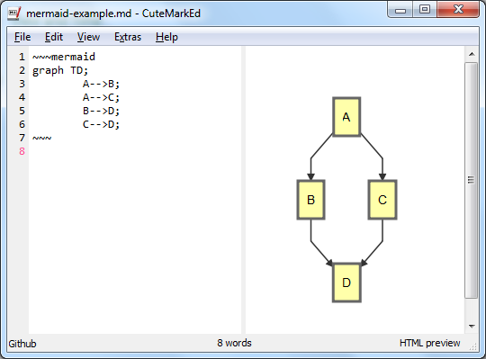

CuteMarkEd
A Markdown editor with live HTML preview
DESCRIPTION
A Qt-based, free and open source Markdown editor with live HTML preview, math expressions, code and markdown syntax highlighting. See the features page for more information.

DOWNLOAD
Sources
MS Windows (Installer)
MS Windows (ZIP file)
OpenSUSE 13.2 (RPM)
Fedora 20 (RPM)
Fedora 21 (RPM)
Fedora 22 (RPM)
Fedora 23 (RPM)
INSTALLATION
- Download the ZIP file
- Create a new directory at any place and copy the ZIP file to it
- Unzip the archive
NEWS
Minor Release 0.11.2 (January 1st, 2016)
IMPROVEDAdded Hungarian translation.
FIXEDEditor pane jumping up and down during editing (#232)FIXEDMissing mermaid CSS for styling in preview (#241)FIXEDCorrect order of HTML Preview/Source menu item (#242)FIXEDRetrieval of last used style on application start on Linux (#257)FIXEDCrash when switching between markdown converters (#260)
Minor Release 0.11.1 (July 6th, 2015)
IMPROVEDUpdated French translation.
FIXEDCustom shortcuts not working (#224).FIXEDDisappearing spell checker highlighting (#228).FIXEDWrong german quotes snippet (#229).
Major Release 0.11.0 (April 26th, 2015)
The 0.11.0 release offers support to create flowchart and sequence diagrams using mermaid.

The snippet completer was extended to also auto complete words from the document:

NEWAdded support to create diagrams using mermaid (#215)NEWAdded auto completion for words extracted from the document (#194)NEWAdded option to ignore YAML header in editor and preview (#136, #139)NEWAdded possibility to change keyboard shortcuts to the options dialog (#144)NEWAdded zoom to HTML preview and the option to change the default font family and size for the HTML preview (#169)NEWAdded synchronization of the current slide between editor and preview in presentation mode (#184)
IMPROVEDMore mnemonics in main menu and option dialog (#104)IMPROVEDAlso support file extension .mdown (#155)IMPROVEDSave last used style on application exit (#159)IMPROVEDFind/Replace widget can be closed with ESC key (#162)
FIXEDBuild with MSVC 2013 and MacOSXFIXEDParallel build with e.g. make -j2
DEPENDENCIES
- Qt 5.2 (LGPL v2.1)
- Discount 2.1.7 (3-clause BSD)
- hoedown 2.0.0 (ISC)
- PEG Markdown Highlight (MIT License)
- hunspell 1.3.2 (LGPL v2.1)